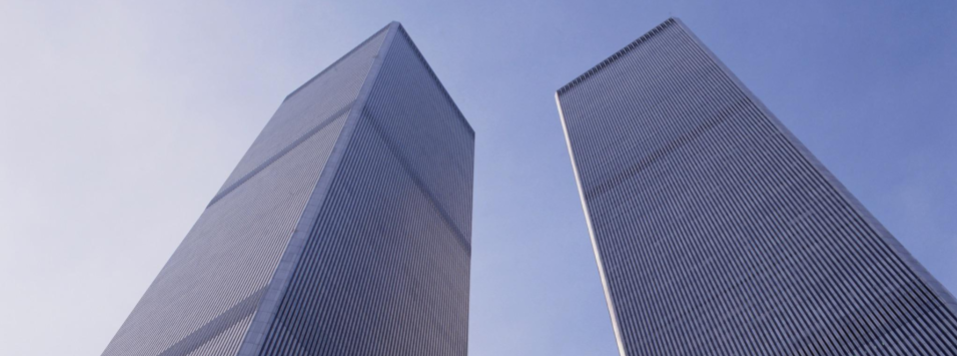

The USA PATRIOT Act
The scene is set with the terrorist attacks of September 1, 2001, that killed approximately 3,000 people, was linked to nineteen Muslim male extremists, and would lay the groundwork for a United States policy known as the Patriot Act (Pitt, 2011).
Pitt investigated whether this act promoted racial profiling that led to discrimination against Muslim Americans and immigrants (2011). First, the constitutional consequences of the Patriot Act were evaluated, and it was found that the act violates not only the 4th Amendment, but the 1st Amendment as well by discriminating based on religion (Pitt, 2011). It was used to enforce “blacklisting” of the Muslim religion by associating religious attire with a potential do-mestic terrorist threat (Pitt, 2011). This “blacklisting” caused Muslim individuals to be stopped at TSA or to have rights withheld if they were immi¬grants (Pitt, 2011).
One example Pitt highlights heavily is the civil case Turkmen v. Ashcroft, wherein a group of Muslim men were held despite their immigration statuses clearing. They had been deemed suspicious without any significant supporting evidence (Pitt, 2011).